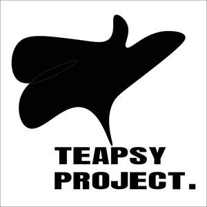

Trade Mark Journal No.2025/037 12 September 2025
UK00004184154 4 April 2025 (21,30,32,33,35,43)

- Class 21
- Coffee mugs; Coffee cups; Coffee services of ceramic; Coffee services of china; Tea cups; Tea infusers; Tea cosies; Cosies (Tea -); Tea pots; Tea caddies; Tea strainers; Tea canisters; Tea balls; Tea filters; Tea sets; Drip mats for tea; Tea urns (Non-electric -); Tea infusers of precious metal; Tea kettles [non-electric]; Tea kettles, non-electric; Tea makers [non-electric]; Tea services [tableware]; Portable tea caddies; Coffee pots; Coffee grinders; Non-electric coffee drippers for brewing coffee; Coffee stirrers; Coffee scoops; Coffee pots [non-electric]; Non-electric coffee pots; Coffee filters not of paper being part of non-electric coffee makers; Coffee filters, not of paper, being part of non-electric coffee makers; Coffee percolators, non-electric; Non-electric coffee percolators; Percolators (Coffee -), non-electric; Vacuum coffee bean containers; Vacuum coffee makers; Non-electrical coffee grinders; Coffee makers, non-electric; Beer steins; Beer mugs; Beer jugs; Beer pitchers; Beer glasses; Pilsner drinking glasses; Drinking steins; Pilsner glasses; Drinking bottles; Pint tankards; Drinking bottles for sports; Coolers for wine; Wine coolers; Beverage glassware; Wine decanters; Wine glasses; Wine pourers; Wine jugs; Wine chillers; Wine aerators; Wine bottle cradles; Wine openers; Wine buckets; Wine tasters [siphons]; Wine strainers; Tubes [pipettes] for wine tasting; Non-electric coolers for wine; Cooling buckets for wine; Ladles for serving wine; Vacuum pumps for wine bottles; Wine drip collars; Wine drip collars specially adapted for use around the top of wine bottles to stop drips; Whisky glasses; Wine coasters of precious metal; Glass decanters; Bottle pourers; Glass bottles; Wine-tasting pipettes; Glass stoppers for bottles.
- Class 30
- Coffee; Decaffeinated coffee; Iced coffee; Chocolate coffee; Coffee drinks; Coffee beans; Mixtures of malt coffee with coffee; Coffee beverages; Coffee (Unroasted -); Unroasted coffee; Caffeine-free coffee; Coffee extracts for use as substitutes for coffee; Coffee essences for use as substitutes for coffee; Coffee substitutes [artificial coffee or vegetable preparations for use as coffee]; Malt coffee; Coffee pods; Coffee beverages with milk; Flavoured coffee; Coffee bags; Unroasted coffee beans; Coffee flavorings; Coffee capsules; Mixtures of malt coffee extracts with coffee; Roasted coffee beans; Instant coffee; Freeze-dried coffee; Coffee flavourings; Beverages with coffee base; Beverages with a coffee base; Coffee oils; Espresso; Ground coffee; Coffee based drinks; Coffee extracts; Coffee in whole-bean form; Sugar-coated coffee beans; Beverages made from coffee; Beverages made of coffee; Drip bag coffee; Ground coffee beans; Substitutes (Coffee -); Coffee substitutes; Aerated drinks [with coffee, cocoa or chocolate base]; Coffee essences; Coffee based beverages; Mixtures of coffee; Coffee mixtures; Chicory for use as substitutes for coffee; Cappuccino; Aerated beverages [with coffee, cocoa or chocolate base]; Chicory [coffee substitute]; Prepared coffee and coffee-based beverages; Coffee concentrates; Coffee in brewed form; Mixtures of coffee and chicory; Coffee, teas and cocoa and substitutes therefor; Mixtures of malt coffee with cocoa; Mixtures of coffee essences and coffee extracts; Ice beverages with a coffee base; Powdered coffee in drip bags; Prepared coffee beverages; Coffee essence; Malt coffee extracts; Mixtures of coffee and malt; Coffee [roasted, powdered, granulated, or in drinks]; Chai tea; Tea; Tea beverages with milk; Barley for use as a coffee substitute; Chocolate bark containing ground coffee beans; Extracts of coffee for use as flavours in beverages; Chocolate with alcohol; Sorbet infused with alcohol; Candies (Non-medicated -) with alcohol; Sweets (Non-medicated -) being alcohol based; Ice cream infused with alcohol; Drinking chocolate; Oolong tea [Chinese tea]; Oolong tea; Rooibos tea; Chamomile tea; Iced tea; Tea (Iced -); Tieguanyin tea; Darjeeling tea; Herbal tea; Peppermint tea; Black tea [English tea]; Ginseng tea; Ginger tea; Jasmine tea; Tea cakes; Tea beverages; Green tea; Tea bags for making non-medicated tea; Tea for infusions; Instant Oolong tea; Tea bags; Rosemary tea; Barley tea; Buckwheat tea; Fermented tea; Tea extracts; Tea leaves; Citron tea; Flavourings of tea; Kelp tea; Sage tea; Lime tea; Tea pods; Lapsang souchong tea; Black tea; White tea; Teas; Iced tea (Non-medicated -); Tea essences; Linden tea; Iced teas; Yellow tea; Herb tea [infusions]; Mate [tea]; Beverages with tea base; Beverages with a tea base; Red ginseng tea; Barley-leaf tea; Instant tea; Tea mixtures; Ginseng tea [insamcha]; Tea substitutes; Tea (Non-medicated -); Herbal tea [other than for medicinal use]; Artificial tea; Beverages made of tea; Instant green tea; Japanese green tea; Non-medicinal herbal tea; Theine-free tea; Iced tea mix powders; Herbal teas; Tisanes made of tea (Non-medicated -); Tea beverages (Non-medicated -); Packaged tea [other than for medicinal use]; Chrysanthemum tea (Gukhwacha); Roasted barley tea [mugicha]; Apple flavoured tea [other than for medicinal use]; Fruit flavoured tea [other than medicinal]; Tea bags (Non-medicated -); Jasmine tea bags, other than for medicinal purposes; Roasted barley tea; Lime blossom tea; Instant white tea; Orange flavoured tea [other than for medicinal use]; Instant black tea; Fruit teas; Artificial tea [other than for medicinal use]; Jasmine tea, other than for medicinal purposes; Tea extracts (Non-medicated -); Rose hip tea; Mugi-cha [roasted barley tea]; Yuja-cha (Korean honey citron tea); Flavourings of tea for food or beverages; Herbal teas [infusions]; Earl grey tea; Earl Grey tea; Tea essences (Non-medicated -); Theine-free tea sweetened with sweeteners; Roasted brown rice tea; Yeast for brewing beer; Beer vinegar; Deproteinised flour for use in the production of beer; Confectionery having liquid spirit fillings; Tea essence (Non-medicated -); Orange blossom water for culinary purposes; Wine vinegar; Confectionery having wine fillings.
- Class 32
- Non-alcoholic beverages flavored with coffee; Low alcohol beer; Alcohol free beverages; Alcohol free wine; Alcohol free cider; Alcohol free aperitifs; Non-alcoholic malt drinks; Non-alcoholic malt beverages; Non-alcoholic malt free beverages [other than for medical use]; Non-alcoholic beer flavored beverages; Non-alcoholic beer; Non-alcoholic wine; Non-alcoholic fruit vinegar beverages; Non-alcoholic beverages; Beverages (Non-alcoholic -); Alcohol-free beers; Non-alcoholic drinks; Sarsaparilla [non-alcoholic beverage]; Kvass [non-alcoholic beverages]; Non-alcoholic carbonated beverages; Malt syrup for beverages; Carbonated non-alcoholic drinks; Root beers, non-alcoholic beverages; Fruit beverages (non-alcoholic); Non-alcoholic fruit drinks; Non-alcoholic honey-based beverages; Honey-based beverages (Non-alcoholic -); Cordials (non-alcoholic beverages); Non-alcoholic soda beverages flavoured with tea; Non-alcoholic beverages flavoured with coffee; Distilled drinking water; Kvass [non-alcoholic beverage]; Non-alcoholic grape juice beverages; Carbohydrate drinks; Non-alcoholic beverages with tea flavor; Non-alcoholic dried fruit beverages; Non-alcoholic flavored carbonated beverages; Soft drinks flavored with tea; Non-alcoholic beverages flavoured with tea; Non-alcoholic beverages flavored with tea; Beer; Malt beer; Bock beer; Saison beer; Beers; Low-alcohol beer; Craft beer; Barley wine [Beer]; Barley wine [beer]; Black beer [toasted-malt beer]; Beer and brewery products; Ginger beer; Flavored beer; Wheat beer; Coffee-flavored beer; Beer wort; Frozen hops for brewing beer; Non-alcoholic beers; Root beer; Dried hops for brewing beer; Craft beers; Lager; Hop pellets for brewing beer; De-alcoholized beer; Imitation beer; Flavored beers; Black beer; Root beers; Flavoured beers; De-alcoholised beer; Bitter [Beers]; Beer-based beverages; Ale; Hops (Extracts of -) for making beer; Extracts of hops for making beer; Non-alcoholic beer-based cocktails; Beer-based cocktails; Hop extracts for manufacturing beer; Coffee-flavored ale; Lagers; Cider, non-alcoholic; Cola drinks; Ginger ale; Ales; Non-alcoholic wines; De-alcoholized wines; Grape juice beverages; Grape ales; De-alcoholised wines; Non-alcoholic sparkling fruit juice drinks; Grape juice.
- Class 33
- Rice alcohol; Alcohol (Rice -); Rum [alcoholic beverage]; Aperitifs with a distilled alcoholic liquor base; Sugarcane-based alcoholic beverages; Pre-mixed alcoholic beverages; Alcoholic energy drinks; Alcoholic beverages, except beer; Alcoholic beverages (except beer); Beverages (Alcoholic -), except beer; Low alcoholic drinks; Grain-based distilled alcoholic beverages; Pre-mixed alcoholic beverages, other than beer-based; Alcoholic cocktails; Alcoholic beverages of fruit; Alcoholic fruit beverages; Cordials [alcoholic beverages]; Alcoholic carbonated beverages, except beer; Alcoholic wines; Baijiu [Chinese distilled alcoholic beverage]; Alcoholic fruit cocktail drinks; Alcoholic beverages except beers; Alcoholic beverages (except beers); Alcoholic beverages [except beers]; Alcoholic cocktails containing milk; Alcoholic seltzers; Fruit (Alcoholic beverages containing -); Alcoholic beverages containing fruit; Alcoholic coffee-based beverage; Alcoholic cordials; Nira [sugarcane-based alcoholic beverage]; Alcoholic bitters; Flavored brewed alcoholic malt beverages, except beers; Alcoholic tea-based beverage; Flavoured brewed alcoholic malt beverages, except beers; Ginseng liquor; Alcoholic aperitifs; Alcoholic punches; Alcoholic essences; Alcoholic cocktail mixes; Prepared alcoholic cocktails; Alcoholic aperitif bitters; Alcoholic preparations for making beverages; Preparations for making alcoholic beverages; Distilled beverages; Beverages (Distilled -); Alcoholic extracts; Wine-based beverages; Wine coolers [drinks]; Whiskey; Whiskey [whisky]; Malt whisky; Wine-based drinks; Wine; Fermented spirit; Spirits; Distilled spirits; Chinese spirit of sorghum (gaolian-jiou); Shochu (spirits); Potable spirits; Spirits [beverages]; Aguardiente [sugarcane spirits]; Korean distilled spirits (soju); Sorghum-based Chinese spirits; Distilled spirits of rice (awamori); Distilled rice spirits [awamori]; Digestifs [liqueurs and spirits]; Digesters [liqueurs and spirits]; Gaolian-jiou [sorghum-based Chinese spirits]; Grape wine; Sparkling grape wine; Sparkling wine; Fruit wine; Mulled wine; Red wine; Rice wine; Strawberry wine; Cooking wine; Blackberry wine; Sparkling fruit wine; Wines; White wine; Sweet wine; Aperitif wines; Mulled wines; Sparkling wines; Beverages containing wine [spritzers]; Wine punch; Dessert wines; Low-alcoholic wine; Still wine; Prepared wine cocktails; Red wines; Sparkling red wines; White wines; Table wines; Yellow rice wine; Sparkling white wines; Fortified wines; Rose wines; Sweet wines; Black raspberry wine (Bokbunjaju); Natural sparkling wines; Wine-based aperitifs; Naturally sparkling wines; Acanthopanax wine (Ogapiju); Korean traditional rice wine (makgeoli); Cooking brandy; Whisky; Brandy.
- Class 35
- Retail services in relation to coffee; Retail services in relation to alcoholic beverages (except beer); Wholesale services in relation to alcoholic beverages (except beer); Retail services relating to alcoholic beverages; Wholesale services in relation to teas.
- Class 43
- Coffee shops; Coffee shop services; Coffee bar services; Tea rooms; Tea room services; Beer bar services; Beer garden services; Serving beverages in microbreweries; Serving beverages in brewpubs; Wine bars; Wine tasting services (provision of beverages); Wine bar services.
SERENITY ZEPHYR LTD